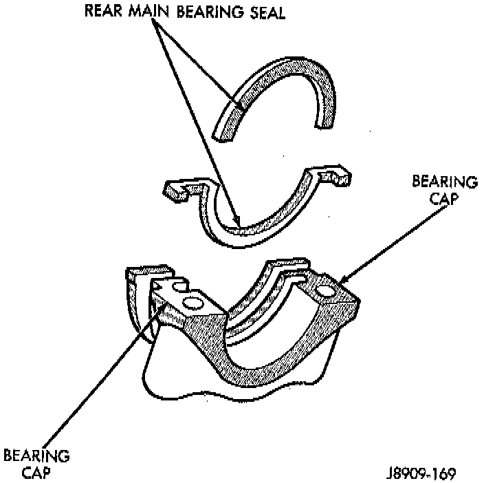
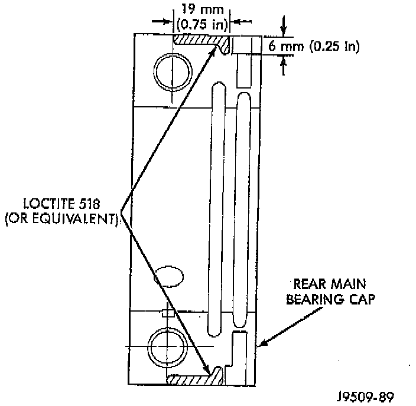

Rear Crankshaft Main Bearing Seal: Service and Repair
NOTE: The crankshaft rear main bearing oil seal consists of two half pieces of Viton with a single lip that effectively seals the rear of the crankshaft. Replace the upper and lower seal halves as a unit to ensure leak free operation.REMOVAL
1. Remove the transmission inspection cover.
2. Remove the oil pan.
3. Remove the rear main bearing cap No.7.
4. Push the upper seal out of the groove. Ensure that the crankshaft and seal groove are not damaged.
5. Remove the lower half of the seal from the bearing cap.
INSTALLATION
1. Wipe the seal surface area of the crankshaft until it is clean.
2. Apply a thin coat of engine oil.
3. Coat the lip of the seal with engine oil.
4. Carefully position the upper seal into the groove in the cylinder block. The lip of the seal faces toward the front of the engine.

5. Place the lower half of the seal into bearing cap No.7.
6. Coat the outer curved surface of the lower seal with soap and the lip of the seal with engine oil. .,
7. Position the lower seal into the bearing cap recess and seat it firmly. Be sure the seal is flush with the cylinder block pan rail.

8. Apply Loctite 518, or equivalent on the rear bearing cap. The bead should be 3 mm (0.125 inch) thick. DO NOT apply Loctite 518, or equivalent to the lip of the seal.
9. Install the rear main bearing cap. DO NOT strike the cap more than twice for proper engagement.
10. Tighten all main bearing bolts to 108 Nm (80 ft. lbs.) torque.
11. Install the oil pan gasket and oil pan.
12. Install the engine flywheel or converter drive plate.